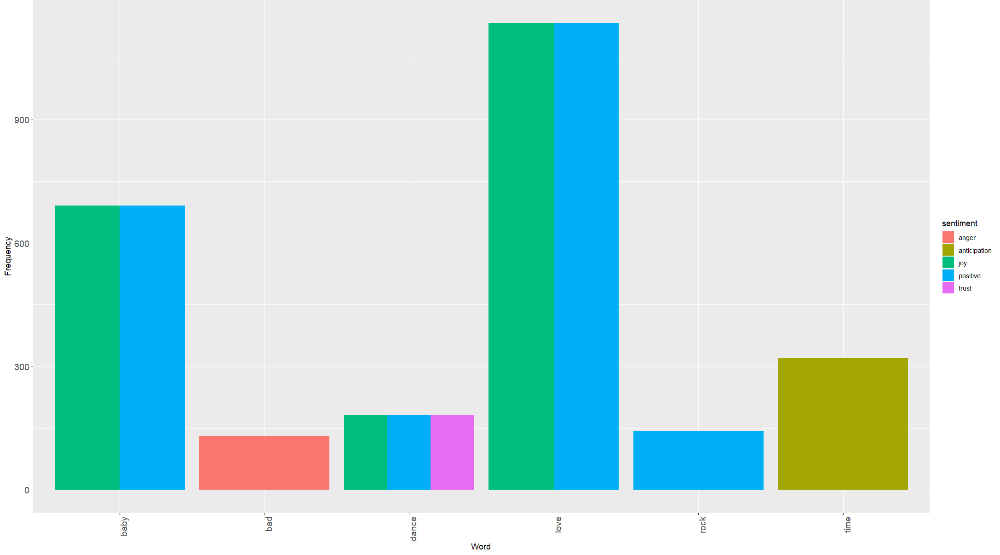
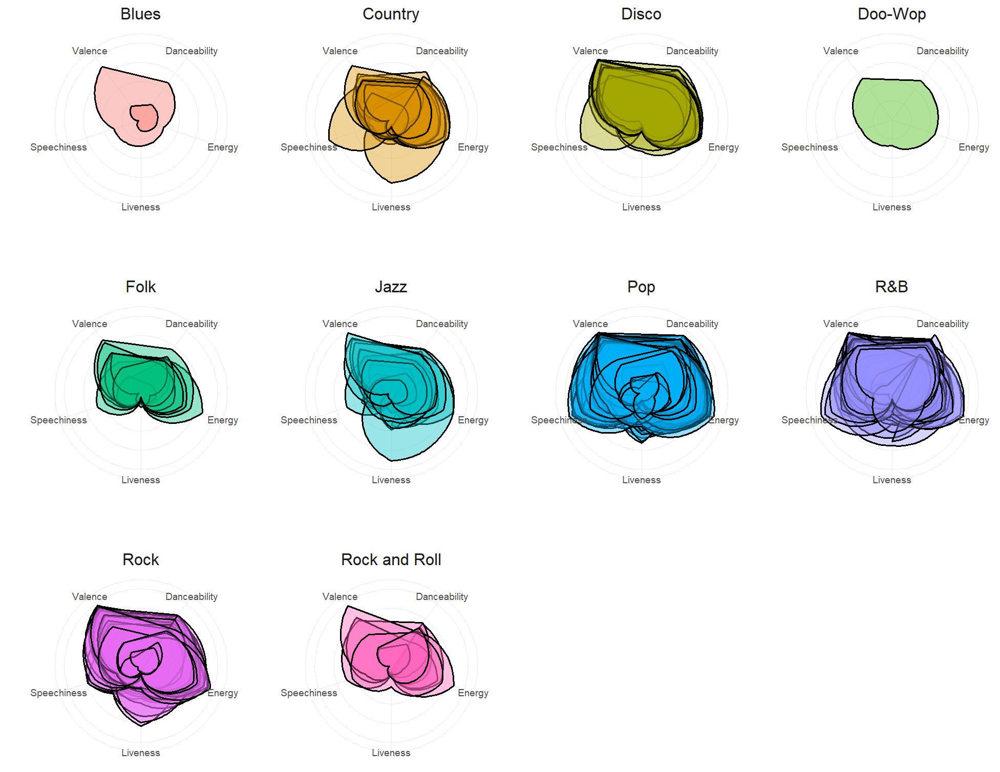
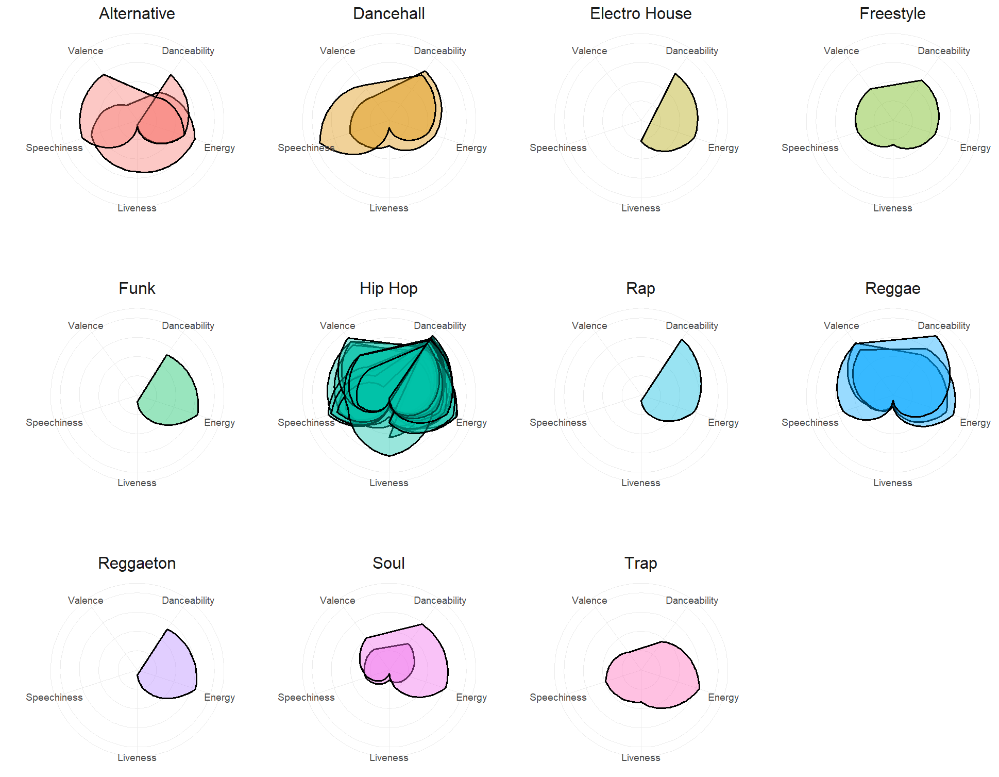
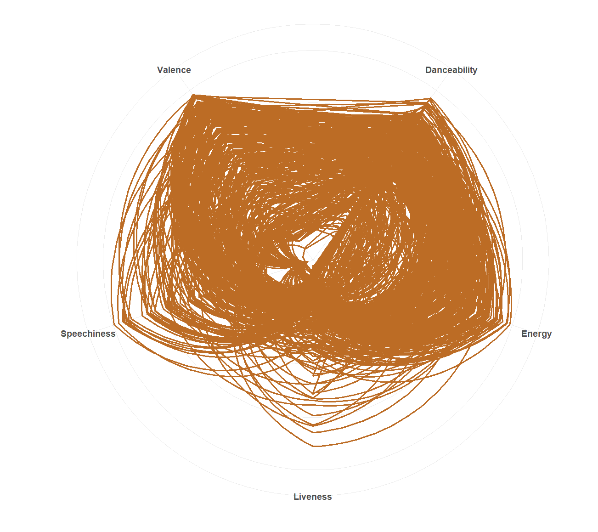
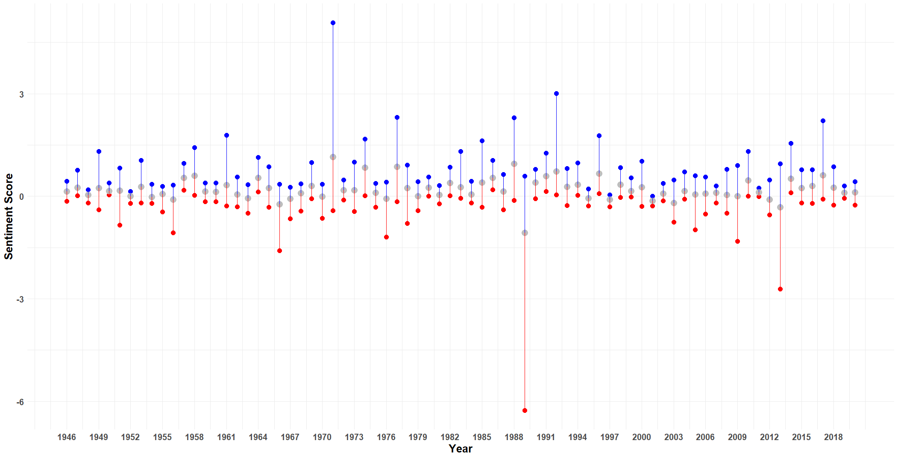

From the Baby Boomers to Generation Alpha, each generation has played a distinctive role in shaping society. Baby Boomers witnessed and contributed to pivotal moments like the Civil Rights Movement and the Space Race. Generation X navigated through the rise of punk rock and the fall of the Berlin Wall. Millennials experienced the advent of the internet and the impacts of the Great Recession. Generation Z grew up in a digital-first world, immersed in social media and facing pressing environmental issues. Generation Alpha, still emerging, is already being shaped by technology and shifting cultural norms. Each generation brings its own unique experiences and values, contributing to the rich tapestry of human history and influencing the trajectory of our collective future.
During the era spanning from the Baby Boomers to Generation Alpha, these were the most popular music genres...
| Genre | Count |
|---|---|
| Alternative | 3 |
| Blues | 2 |
| Country | 16 |
| Dancehall | 2 |
| Disco | 10 |
| Doo-Wop | 1 |
| Electro House | 1 |
| Folk | 9 |
| Freestyle | 1 |
| Funk | 1 |
| Hip Hop | 26 |
| Jazz | 19 |
| Pop | 149 |
| R&B | 63 |
| Rap | 1 |
| Reggae | 3 |
| Reggaeton | 1 |
| Rock | 56 |
| Rock and Roll | 8 |
| Soul | 2 |
| Trap | 1 |
From these top words and their associated emotions, we can glean insights into prevalent themes and sentiments that reverberated across all generations, reflecting the cultural, social, and emotional landscape of their respective eras. Notably, the top two emotions, Joy and Positivity, wielded influence over significant events throughout history, including moments of social upheaval, technological advancements, and cultural revolutions. These emotions have played a crucial role in shaping the collective experiences and values of each generation, from the Baby Boomers to Generation Alpha.
Throughout all generations, there's a rich tapestry of music genres, each with its unique characteristics like valence, danceability, speechiness, energy, and liveness. These traits provide valuable insights into the distinct sounds and vibes that defined every era.
 Across all generations, there's a recurring trend observed in the music landscape. This trend is marked by high valence, danceability, speechiness and energy, while showing a lesser emphasis on liveness. These traits define the essence of each era's music.
Analyzing the sentiment scores across all generations throughout the years provides valuable insights into emotional trends, capturing the spectrum of human experiences across different eras. For instance, the highest sentiment score was recorded in 1971, signifying a period marked by cultural revolutions, social movements, and the pursuit of change. Conversely, the lowest sentiment score occurred in 1989, a year fraught with economic uncertainty and geopolitical upheaval. Events such as the fall of the Berlin Wall and the Tiananmen Square protests contributed to widespread feelings of fear and uncertainty among individuals from various generations. These fluctuations in sentiment reflect the dynamic nature of history and its impact on the emotional well-being of people across generations.
Across generations, iconic songs with overwhelmingly positive sentiment scores encapsulate each era's spirit are...
| Song | Artist | Year Released | Sentiment Score |
|---|---|---|---|
| Joy to the World | Three Dog Night | 1971 | 5.07 |
| Baby Baby Baby | TLC | 1992 | 3.00 |
| Best of My Love | The Emotions | 1977 | 2.31 |
Similarly, there are songs that resonate with the lowest sentiment scores across generations, reflecting the somber moments of each era. Those songs are...
| Song | Artist | Year Released | Sentiment Score |
|---|---|---|---|
| Miss You Much | Janet Jackson | 1989 | -6.26 |
| Harlem Shake | Baauer | 2013 | -2.71 |
| 96 Tears | ? And the Mysterians | 1996 | -1.59 |